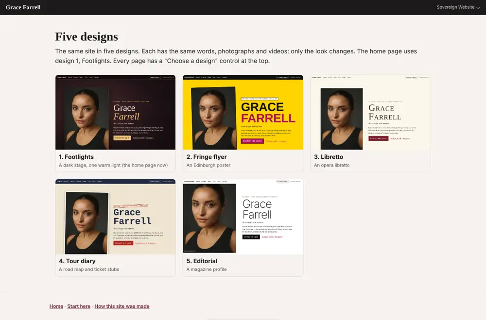
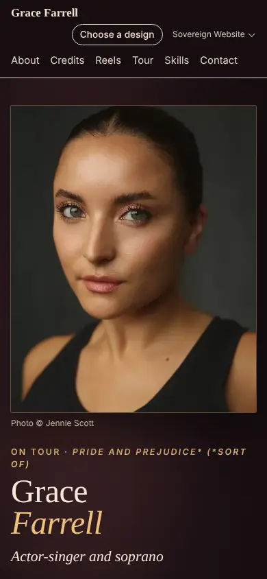
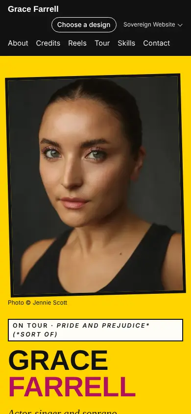

Synthetic users: Grace Farrell, round 1
Site: https://grace-farrell.artist.sovereignweb.site/ at 07df474 (v0.1.1); the home page is design 1, Footlights. Run: 21 November 2026, about 00:45 UTC, by design.b.rounds. Look score: 2.4 (3, 3, 2, 2, 2). Best design votes: 2, 5, 2, 2, 1, so Fringe flyer wins. Nobody said "wow". The review.
Method: Synthetic users. One agent played all five personas, in its own folder: - a phone visitor; - a casting director; - a low-vision reader; - a design critic; - a theatre-goer. The tall phone captures stopped at 5,000 px, part way into the tour, so the tour was judged from the text. These are simulations, and never replace the measured checks or a real person.
| Persona | Look | Best | Weakest | The one change |
|---|---|---|---|---|
| Phone visitor | 3 | 2 | 3 | "a shorter photo on phones, so the name and one button show on the first screen" |
| Casting director | 3 | 5 | 4 | "a summary strip under the name with voice type, range ... agent ... and a reel button" |
| Low-vision reader | 2 | 2 | 5 | "no thin or monospace text for content, and hide the map numbers from assistive tech" |
| Design critic | 2 | 2 | 3 | "let each design rebuild the layout ... not just repaint it" |
| Theatre-goer | 2 | 1 | 5 | a "Next" line with the next venue, date and ticket link (she is a cover, so only as the tour's, not hers) |
Agreed by three or more
- The useful parts sit too low: the agent, the vocal range and the tour.
- The lead is out of date: a run she "finished" in 2025.
- Some type is weak: - the thin display type in design 5; - the monospace in design 4; - the faint spaced labels in design 3; - the kicker orphan in every design.
- The five designs look like one layout repainted.



The headshot in these screenshots: photo © Jennie Scott, as credited on Grace's site.